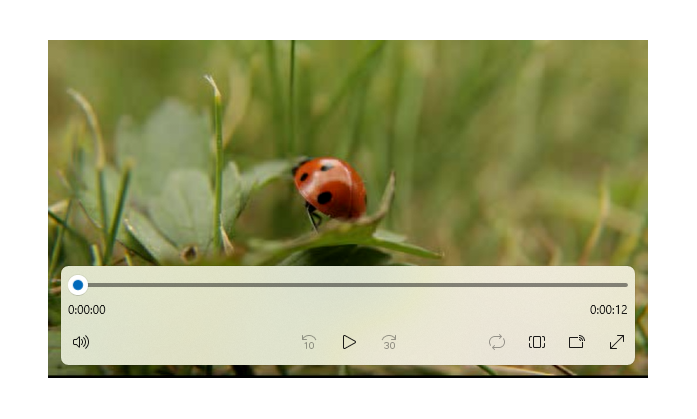
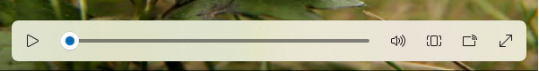
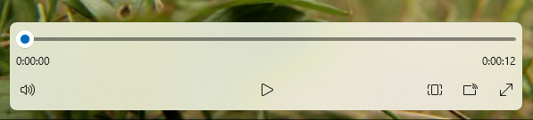

Media players
Media playback involves the viewing and listening of video and audio through inline (embedded in a page or with a group of other controls) or dedicated full-screen experiences.
Users expect a basic control set, such as play/pause, skip back, skip forward, which you can modify as required (including the media player's buttons, the background of the control bar, and control arrangement or layout).

Is this the right control?
Use a media player when you want to play audio or video in your app. To display a collection of images, use a flip view.
Recommendations
The media player supports both light and dark themes, but dark theme provides a better experience for most entertainment scenarios. The dark background provides better contrast, in particular for low-light conditions, and limits the control bar from interfering in the viewing experience.
When playing video content, encourage a dedicated viewing experience by promoting full-screen mode over inline mode. The full-screen viewing experience is optimal, and options are restricted in the inline mode.
If you have the screen real estate, go with the double-row layout. It provides more space for controls than the compact single-row layout and can be easier to navigate using a variety of inputs.
The default controls have been optimized for media playback, however you have the ability to add custom options you need to the media player in order to provide the best experience for your app. Visit Create custom transport controls to learn more about adding custom controls.
Create a media player
- Important APIs: MediaPlayerElement class, MediaTransportControls class
The WinUI 3 Gallery app includes interactive examples of most WinUI 3 controls, features, and functionality. Get the app from the Microsoft Store or get the source code on GitHub
Add media to your app by creating a MediaPlayerElement object in XAML and set the Source to a MediaSource that points to an audio or video file.
This XAML creates a MediaPlayerElement and sets its Source property to the URI of a video file that's local to the app. The MediaPlayerElement begins playing when the page loads. To suppress media from starting right away, you can set the AutoPlay property to false.
<MediaPlayerElement x:Name="mediaPlayerElement"
Source="ms-appx:///Videos/video1.mp4"
Width="400" AutoPlay="True"/>
This XAML creates a MediaPlayerElement with the built in transport controls enabled and the AutoPlay property set to false.
<MediaPlayerElement x:Name="mediaPlayerElement"
Source="ms-appx:///Videos/video1.mp4"
Width="400"
AutoPlay="False"
AreTransportControlsEnabled="True"/>
Important
Setting MediaPlayerElement.Source to a relative URI (ms-appx/ms-resource) only works in an app packaged with a Windows Application Packaging Project. If your app does not use a Windows Application Packaging Project, the recommended workaround is to convert the relative ms-appx:/// URI to a fully resolved file:/// URI. Also see the Set the media source and Open local media files sections later in this article.
Media transport controls
MediaPlayerElement has built in transport controls that handle play, stop, pause, volume, mute, seeking/progress, closed captions, and audio track selection. To enable these controls, set AreTransportControlsEnabled to true. To disable them, set AreTransportControlsEnabled to false. The transport controls are represented by the MediaTransportControls class. You can use the transport controls as-is, or customize them in various ways. For more info, see the MediaTransportControls class reference and Create custom transport controls.
The transport controls support single- and double-row layouts. The first example here is a single-row layout, with the play/pause button located to the left of the media timeline. This layout is best reserved for inline media playback and compact screens.

The double-row controls layout (below) is recommended for most usage scenarios, especially on larger screens. This layout provides more space for controls and makes the timeline easier for the user to operate.

System media transport controls
MediaPlayerElement is automatically integrated with the system media transport controls. The system media transport controls are the controls that pop up when hardware media keys are pressed, such as the media buttons on keyboards. For more info, see SystemMediaTransportControls.
Set the media source
To play files on the network or files embedded with the app, set the Source property to a MediaSource with the path of the file.
Tip
To open files from the internet, you need to declare the Internet (Client) capability in your app's manifest (Package.appxmanifest). For more info about declaring capabilities, see App capability declarations.
This code attempts to set the Source property of the MediaPlayerElement defined in XAML to the path of a file entered into a TextBox.
<TextBox x:Name="txtFilePath" Width="400"
FontSize="20"
KeyUp="TxtFilePath_KeyUp"
Header="File path"
PlaceholderText="Enter file path"/>
private void TxtFilePath_KeyUp(object sender, KeyRoutedEventArgs e)
{
if (e.Key == Windows.System.VirtualKey.Enter)
{
TextBox tbPath = sender as TextBox;
if (tbPath != null)
{
LoadMediaFromString(tbPath.Text);
}
}
}
private void LoadMediaFromString(string path)
{
try
{
Uri pathUri = new Uri(path);
mediaPlayerElement.Source = MediaSource.CreateFromUri(pathUri);
}
catch (Exception ex)
{
if (ex is FormatException)
{
// handle exception.
// For example: Log error or notify user problem with file
}
}
}
To set the media source to a media file embedded in the app, initialize a Uri with the path prefixed with ms-appx:///, create a MediaSource with the Uri and then set the Source to the Uri. For example, for a file called video1.mp4 that is in a Videos subfolder, the path would look like: ms-appx:///Videos/video1.mp4
Important
Setting MediaPlayerElement.Source to a relative URI (ms-appx/ms-resource) only works in an app packaged with a Windows Application Packaging Project.
This code sets the Source property of the MediaPlayerElement defined previously in XAML to ms-appx:///Videos/video1.mp4.
private void LoadEmbeddedAppFile()
{
try
{
Uri pathUri = new Uri("ms-appx:///Videos/video1.mp4");
mediaPlayerElement.Source = MediaSource.CreateFromUri(pathUri);
}
catch (Exception ex)
{
if (ex is FormatException)
{
// handle exception.
// For example: Log error or notify user problem with file
}
}
}
Open local media files
To open files on the local system or from OneDrive, you can use the FileOpenPicker to get the file and Source to set the media source, or you can programmatically access the user media folders.
If your app needs access without user interaction to the Music or Video folders, for example, if you are enumerating all the music or video files in the user's collection and displaying them in your app, then you need to declare the Music Library and Video Library capabilities. For more info, see Files and folders in the Music, Pictures, and Videos libraries.
The FileOpenPicker does not require special capabilities to access files on the local file system, such as the user's Music or Video folders, since the user has complete control over which file is being accessed. From a security and privacy standpoint, it is best to minimize the number of capabilities your app uses.
To open local media using FileOpenPicker
Call FileOpenPicker to let the user pick a media file.
Use the FileOpenPicker class to select a media file. Set the FileTypeFilter to specify which file types the
FileOpenPickerdisplays. Call PickSingleFileAsync to launch the file picker and get the file.Use a MediaSource to set the chosen media file as the MediaPlayerElement.Source.
To use the StorageFile returned from the FileOpenPicker, you need to call the CreateFromStorageFile method on MediaSource and set it as the Source of the MediaPlayerElement. Then call Play on the MediaPlayerElement.MediaPlayer to start the media.
This example shows how to use the FileOpenPicker to choose a file and set the file as the Source of a MediaPlayerElement.
<MediaPlayerElement x:Name="mediaPlayerElement"/>
...
<Button Content="Choose file" Click="Button_Click"/>
private async void Button_Click(object sender, RoutedEventArgs e)
{
await SetLocalMedia();
}
async private System.Threading.Tasks.Task SetLocalMedia()
{
var openPicker = new Windows.Storage.Pickers.FileOpenPicker();
WinRT.Interop.InitializeWithWindow.Initialize(openPicker, WinRT.Interop.WindowNative.GetWindowHandle(this));
openPicker.FileTypeFilter.Add(".wmv");
openPicker.FileTypeFilter.Add(".mp4");
openPicker.FileTypeFilter.Add(".wma");
openPicker.FileTypeFilter.Add(".mp3");
var file = await openPicker.PickSingleFileAsync();
// mediaPlayerElement is a MediaPlayerElement control defined in XAML
if (file != null)
{
mediaPlayerElement.Source = MediaSource.CreateFromStorageFile(file);
mediaPlayerElement.MediaPlayer.Play();
}
}
Set the poster source
You can use the PosterSource property to provide your MediaPlayerElement with a visual representation before the media is loaded. A PosterSource is an image, such as a screen shot, movie poster, or album art, that is displayed in place of the media. The PosterSource is displayed in the following situations:
- When a valid source is not set. For example, Source is not set,
Sourcewas set tonull, or the source is invalid (as is the case when a MediaFailed event occurs). - While media is loading. For example, a valid source is set, but the MediaOpened event has not occurred yet.
- When media is streaming to another device.
- When the media is audio only.
Here's a MediaPlayerElement with its Source set to an album track, and it's PosterSource set to an image of the album cover.
<MediaPlayerElement Source="ms-appx:///Media/Track1.mp4" PosterSource="ms-appx:///Media/AlbumCover.png"/>
Keep the device's screen active
Typically, a device dims the display (and eventually turns it off) to save battery life when the user is away, but video apps need to keep the screen on so the user can see the video. To prevent the display from being deactivated when user action is no longer detected, such as when an app is playing video, you can call DisplayRequest.RequestActive. The DisplayRequest class lets you tell Windows to keep the display turned on so the user can see the video.
To conserve power and battery life, you should call DisplayRequest.RequestRelease to release the display request when it is no longer required. Windows automatically deactivates your app's active display requests when your app moves off screen, and re-activates them when your app comes back to the foreground.
Here are some situations when you should release the display request:
- Video playback is paused, for example, by user action, buffering, or adjustment due to limited bandwidth.
- Playback stops. For example, the video is done playing or the presentation is over.
- A playback error has occurred. For example, network connectivity issues or a corrupted file.
To keep the screen active
Create a global DisplayRequest variable. Initialize it to
null.private DisplayRequest appDisplayRequest = null;Call RequestActive to notify Windows that the app requires the display to remain on.
Call RequestRelease to release the display request whenever video playback is stopped, paused, or interrupted by a playback error. When your app no longer has any active display requests, Windows saves battery life by dimming the display (and eventually turning it off) when the device is not being used.
Each MediaPlayerElement.MediaPlayer has a PlaybackSession of type MediaPlaybackSession that controls various aspects of media playback such as PlaybackRate, PlaybackState and Position. Here, you use the PlaybackStateChanged event on MediaPlayer.PlaybackSession to detect situations when you should release the display request. Then, use the NaturalVideoHeight property to determine whether an audio or video file is playing, and keep the screen active only if video is playing.
<MediaPlayerElement x:Name="mediaPlayerElement" Source="ms-appx:///Videos/video1.mp4"/>
public sealed partial class MainWindow : Window
{
public DisplayRequest appDisplayRequest = null;
// using Microsoft.UI.Dispatching;
private DispatcherQueue dispatcherQueue = DispatcherQueue.GetForCurrentThread();
public MainWindow()
{
this.InitializeComponent();
mediaPlayerElement.MediaPlayer.PlaybackSession.PlaybackStateChanged +=
PlaybackSession_PlaybackStateChanged;
}
private void PlaybackSession_PlaybackStateChanged(MediaPlaybackSession sender, object args)
{
MediaPlaybackSession playbackSession = sender as MediaPlaybackSession;
if (playbackSession != null && playbackSession.NaturalVideoHeight != 0)
{
if (playbackSession.PlaybackState == MediaPlaybackState.Playing)
{
if (appDisplayRequest is null)
{
dispatcherQueue.TryEnqueue(DispatcherQueuePriority.Normal, () =>
{
appDisplayRequest = new DisplayRequest();
appDisplayRequest.RequestActive();
});
}
}
else // PlaybackState is Buffering, None, Opening, or Paused.
{
if (appDisplayRequest is not null)
{
appDisplayRequest.RequestRelease();
appDisplayRequest = null;
}
}
}
}
}
Control the media player programmatically
MediaPlayerElement provides numerous properties, methods, and events for controlling audio and video playback through the MediaPlayerElement.MediaPlayer property. For a full listing of properties, methods, and events, see the MediaPlayer reference page.
Advanced media playback scenarios
For more complex media playback scenarios like playing a playlist, switching between audio languages, or creating custom metadata tracks, set the MediaPlayerElement.Source to a MediaPlaybackItem or a MediaPlaybackList. See the Media playback page for more information on how to enable various advanced media functionality.
Resize and stretch video
Use the Stretch property to change how the video content and/or the PosterSource fills the container it's in. This resizes and stretches the video depending on the Stretch value. The Stretch states are similar to picture size settings on many TV sets. You can hook this up to a button and allow the user to choose which setting they prefer.
- None displays the native resolution of the content in its original size.This can result in some of the video being cropped or black bars at the edges of the video.
- Uniform fills up as much of the space as possible while preserving the aspect ratio and the video content. This can result in horizontal or vertical black bars at the edges of the video. This is similar to wide-screen modes.
- UniformToFill fills up the entire space while preserving the aspect ratio. This can result in some of the video being cropped. This is similar to full-screen modes.
- Fill fills up the entire space, but does not preserve the aspect ratio. None of video is cropped, but stretching may occur. This is similar to stretch modes.

Here, an AppBarButton is used to cycle through the Stretch options. A switch statement checks the current state of the Stretch property and sets it to the next value in the Stretch enumeration. This lets the user cycle through the different stretch states.
<AppBarButton Icon="Trim"
Label="Resize Video"
Click="PictureSize_Click" />
private void PictureSize_Click(object sender, RoutedEventArgs e)
{
switch (mediaPlayerElement.Stretch)
{
case Stretch.Fill:
mediaPlayerElement.Stretch = Stretch.None;
break;
case Stretch.None:
mediaPlayerElement.Stretch = Stretch.Uniform;
break;
case Stretch.Uniform:
mediaPlayerElement.Stretch = Stretch.UniformToFill;
break;
case Stretch.UniformToFill:
mediaPlayerElement.Stretch = Stretch.Fill;
break;
default:
break;
}
}
Enable low-latency playback
Set the RealTimePlayback property to true on a MediaPlayerElement.MediaPlayer to enable the media player element to reduce the initial latency for playback. This is critical for two-way communications apps, and can be applicable to some gaming scenarios. Be aware that this mode is more resource intensive and less power-efficient.
This example creates a MediaPlayerElement and sets RealTimePlayback to true.
MediaPlayerElement mediaPlayerElement = new MediaPlayerElement();
mediaPlayerElement.MediaPlayer.RealTimePlayback = true;
UWP and WinUI 2
Important
The information and examples in this article are optimized for apps that use the Windows App SDK and WinUI 3, but are generally applicable to UWP apps that use WinUI 2. See the UWP API reference for platform specific information and examples.
This section contains information you need to use the control in a UWP or WinUI 2 app.
APIs for this control exist in the Windows.UI.Xaml.Controls namespace.
- UWP APIs: MediaPlayerElement class, MediaTransportControls class
- Open the WinUI 2 Gallery app and see the MediaPlayerElement in action. The WinUI 2 Gallery app includes interactive examples of most WinUI 2 controls, features, and functionality. Get the app from the Microsoft Store or get the source code on GitHub.
We recommend using the latest WinUI 2 to get the most current styles and templates for all controls. WinUI 2.2 or later includes a new template for this control that uses rounded corners. For more info, see Corner radius.
If you are designing for the 10-foot experience, go with the double-row layout. It provides more space for controls than the compact single-row layout and it is easier to navigate using a gamepad for 10-foot. See the Designing for Xbox and TV article for more information about optimizing your application for the 10-foot experience.
MediaPlayerElement is only available in Windows 10, version 1607 and later. If you are developing an app for an earlier version of Windows 10, you need to use the MediaElement control instead. All recommendations made here apply to MediaElement as well.